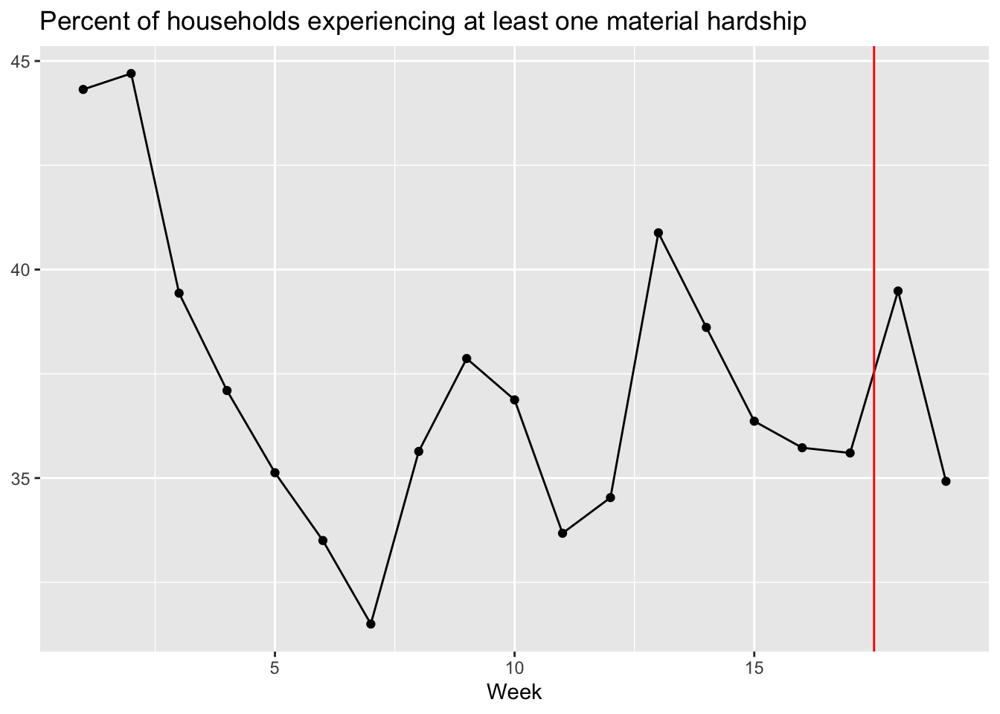

Material hardship
Old questions
Number (Black/African American)
At least one hardship (overall)

At least one hardship (Black/African American)
At least one hardship (by income)
At least one hardship (by employment)
New questions
Food
How worried are you about having enough money to pay for food to feed your household for the next month?
Eviction
If you rent the place where you currently live, how worried are you about being evicted in the next month?
Foreclosure
If you own the house you currently live in, how worried are you that the mortgage will be foreclosed in the next month?
Utilities
How worried are you that your utilities (water, electricity, gas) will turn off in the next month?
Social support
Note that for single caregivers, responses to “partner/spouse” support are removed.
Hardship and social support
Has material hardship (old questions)
Has material hardship (new questions)
Number of material hardship (new questions)
Social support
Note that for single caregivers, responses to “partner/spouse” support are removed.
Source of support
Children as support
Ages
Number per household
Type of support
Type of support by age